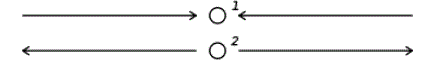
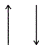

Беседа 3243 от 3877 · Беинса Дуно
Млад и стар
„Отче наш“
„Махар Бену Аба“
Целият живот се намира в едно противоречие. Всичките хора всеки ден минават през тия състояния. Думата противоречие – разбираме, че очакваш да ти се случи нещо обратно. Ядеш много с цел да се поправиш, но случва се, от многото ядене се разболяваш. Очакваш от много ядене здраве, сила. Искаш да забогатееш. Мислиш, че като забогатееш, ще се подигнеш, но с богатството се случва, ти си създадеш повече неприятности. Онези хора, които разсъждават, искат да знаят причините, онези, които не разсъждават философски, те само констатират фактите. Казва: „Иван е болен.“ Свършена работа. Другият, който философски разсъждава, казва: „Защо ли е заболял?“ Единият казва: „Заболял, свършена работа.“ Другият казва: „Да оздравее, свърши се.“ Онзи казва: „Защо заболя?“ Другият казва: „Не трябваше да заболява.“ Търси причините.
Сега някой е умен, друг не е умен. Някой е съобразителен. Запример срещате противоречия, които забелязвам във вас. Те произтичат, че има нещо, което не ви достига. Вземете в музиката. Всинца пеете. Един пее, взема правилно тоновете, друг само кряка. Да кажем, че може да имате шестнайсет или трийсет и две, или сто трептения в един тон. Верността на това зависи да вземете точно трептенията – ако се изгуби едно, две, три, четири, тогава тонът огрубява. Как усещате? Има нещо във вашето ухо, не харесвате този тон. Вие сега като пеете, не ви харесва. Вие сега в живота искате да бъдете щастливи, търсите щастието вън от себе си. Понеже вън от себе си го търсите... Някой път го търсите вътре.
Но то са два процеса:


Аз искам само да ви направя едно изяснение, понеже наблюдавам противоречията. Вие не може да свържете края на противоречията. Търсите щастието и мислите, че на земята може да го намерите. Щастието може да го намерите, че то е толкоз подвижно, че всеки ден може да го намерите и всеки ден може да го изгубите; всяка секунда може да го намерите и всяка секунда може да го изгубите. То е много малка причината. Вие имате приятели и приятелки. Сега няма да се спирам на психологическите обяснения на приятелството. Има известни чувства, които свързват хората. Туй чувство се намира в задната част на главата – няма да ви кажа мястото къде е, но ще го търсите, отзад се намира. В някои хора туй чувство е силно развито. Туй чувство има признак на долната устна. И него няма да ви казвам. Да кажем, някой от вас се дразни, някои сте сприхави. Някой път свързвате честност и справедливост. Честността произтича от личните чувства в човека, че той е човек, има известни правила, известно достойнство. Ако някой го обиди, той прави цял източен въпрос. Когато справедливостта е добре развита, има два белега между веждите на човека. И него няма да ви го казвам. Няма да ви го кажа къде е, то е опит.
Когато дойде един учител по химия, и ви каже, че кислородът и водородът може да ви говорят, но за да ви говорят, вие трябва да направите някакъв опит. Сега, ако аз бих направил опит с вас – лесно може да направя опита, без да поставям кислорода и водорода в някакво съединение. Ще ви донеса едно шише с вода, ще кажа какво нещо е кислородът и водородът. Кислородът и водородът, като се съединят, образуват една течност. Ако вие ги разделите, тогава кислородът усилва дишането, горението, образува топлина. Какво образува водородът? Водородът има едно свойство, внася мекота в себе си. Мекотата на водата се дължи на водорода, а пък тази активност на водата се дължи на кислорода. Кислородът е брат, водородът е сестра. Сестрата е мека, братът е енергичен – като влезе, за двама разкопава. Сестрата посажда. Той разкопае, сестрата дойде, заглади. Братът разкопае друга дупка, сестрата посажда нещо. Братът, като мине, вижда насадено, той полива. Който полива, е брат. Който приема водата, е сестра.
Това са аналогии. Аналогията е един труден въпрос. Човек не може да разбира аналогиите, ако причинността в него не е развита. Той трябва да разбира нещата, да разсъждава логически. Казвате някой път: „Защо той не ме обича?“ Той не ви обича, защото вашите крака миришат. „Защо той не ме обича?“ Той не ви обича, защото вашите ръце миришат. „Защо той не ме обича?“ Защото очите ви са гуреливи. „Защо той не ме обича?“ Защото малко сте глух. „Защо той не ме обича?“ Защото нямате обхода, не знаете какво говорите. „Защо той не ме обича?“ Защото не сте добре облечени. „Защо той не ме обича?“ Защото нямате обуща. Ред причини са наред, за които някои не ви обичат. Ако влезете в едно събрание с разчорлена коса, веднага някои хора ще имат отвращение. Ако косата е добре вчесана, ще им бъдете приятен. Това са малки причини, по които се прави едно различие, определя се степента. Ако си добре облечен, то е хубаво, понеже в човека има център някъде, който показва ред и порядък, всяко нещо иска да го тури намясто. Ти туриш шапката, но не я туриш както трябва. Туриш шапката – това, което е отпред, отзад го туриш. Кой как те срещне, казва: „Той има благо, турена е шапката наопаки.“
Представете си, че съблечете палтото си и го турите наопаки, облечете го наопаки. Щом облечете палтото наопаки, то е четвъртото измерение вече. Защото невъзможно е при обикновено състояние да турите лявата обувка на десния крак и дясната на левия крак. Щом обърнете палтото и го облечете наопаки, щом турите лявата обувка на десния крак и дясната обувка на левия крак, съвсем друг човек станете. Сега ето какво ще стане. Ако обърнете палтото наопаки, ще се изменят теченията. Като носите палтото обикновено, теченията отиват нагоре. Като го обърнете наопаки, никъде не сядате. В един случай ще имате желание да седите някъде да си почивате, в другия случай ще имате желание постоянно да пътувате.
Да направим аналогия логически. Вие всякога търсите да се сприятелявате, а пък някои от вас казват: „Не ми трябват приятели, достатъчно ми е този приятел, който имам.“ Казвам: защо, на правата страна ли сте? Ако имате само един приятел, на правата страна ли сте? Ако имате много приятели, на правата страна ли сте? Но то е процес. Да имаш един приятел, но в дадения случай ти трябва едно ядене, за днешния ден ти трябва едно ядене. В Европа има три режима: едни ядат един път на ден, други ядат два пъти, трети ядат три пъти – сутрин, на обед и вечер. Ти ако ядеш само едно ядене, става ли работа? Сутрин ще е за сутрин, обед – за обед, и вечер – за вечер. Този процес, който върви така, постоянно се повтаря, какво ви допринася? Психологически като разсъждаваме, какво ви допринася?
Вие сте млади, искате да се облечете. Вие отивате при един дрехар, пък нямате достатъчно пари, не ви достигат за един костюм. Трябват две хиляди лева. Турям две хиляди, увеличавам го, за да направя нещата понятни, защото всичките неща са увеличени, че не виждате лесно. Един учен човек ще увеличи една микроба, ще я направи голяма. Ти я гледаш на книга, пък тя милиони пъти увеличена. Тя не е такава голяма, с просто око не се вижда, той я направил голяма. А пък някой направил слънцето така. Такова ли е слънцето? Милиони пъти го намалил. Слънцето е един милион и петстотин пъти по-голямо от земята, той го направил като една топка. Мислиш, че имаш една реалност. Казва: „Това е слънцето.“
Сега в какво седи противоречието? Умният човек ще види, че нещата може да бъдат големи, може да бъдат и малки. Когато си малък, малко ядеш, когато си голям, много ядеш, голям ставаш. Ако постоянно малко ядеш, малък оставаш. Ако много ядеш, голям ставаш. Ако малко учиш, малко знаеш. Ако много учиш, много знаеш. Ако много употребяваш, силен ставаш. Ако малко употребяваш, слаб ставаш. Това са процеси.
Казва: „Не искам много да се уча.“ Невежа ще останеш. „Аз не искам много да прилагам.“ Слаб ще останеш. Сега трябва да разбирате тясната връзка. Някой път вие казвате: „Аз искам да бъда добър.“ Но вие не разбирате защо искате да бъдете добри. Добротата винаги носи сила в себе си. Човек, който иска да бъде силен, той трябва да бъде добър. Следователно добротата е храна. За да произведеш сила, ти трябва да бъдеш добър, за да имаш сила, с която може да работиш. Ако не си добър, ще бъдеш един капиталист без пари или търговец без стока. Какво ще донесе един учен човек, който няма материал в главата си? Да кажем, учите по химия. Колко елемента има? Казвате, че са сто. Едни твърдят, че има само един елемент. Не е вярно. Други казват, че са сто, и то не е вярно. Един елемент съществува в света, от който са излезли всички други елементи. То е съвсем отвлечена, тази идея. Що е елемент? Тя е съставна част. По-рано мислеха, че атомът е най-малката част. Сега разлагат атома на още по-малки частици. Един ден и тия частици ще ги разложат. Те не са дошли до крайния предел. Йоните не са още най-малките частици.
Единственото нещо в света, което е елемент, то е любовта. Единственото нещо, което е елемент, то е мъдростта. Единственото нещо, което е елемент, то е истината. Производни неща има. Животът, той е елемент. Знанието, светлината, това са елементи. Това са много широки обобщения. Има приложение, когато има знание. Когато няма приложение, има опасност. Ние се разширяваме повече, няма къде да приложим знанието, само изгубваме вътрешната връзка.
Вие искате да обичате. Защо? Мнозина говорят, психология нямат. Ако не обичаш, няма да има никакво кръвообращение, артериалната и венозната кръв няма да се движат, дишане няма да има, следователно ти ще умреш. Въпросът за любовта в света не е нищо друго, освен да се поддържа организмът. Без любов няма да може да ядеш, без любов няма да може да мислиш. Защо трябва да обичаме? Ако искаш да живееш, трябва да обичаш. Ако искаш да ядеш, трябва да обичаш. Ако искаш да учиш, трябва да обичаш. Ако ти не обичаш, всичките процеси са невъзможни. Любовта е един капитал, който е турен в действие. Сега казвате: „Мене не ми трябва любовта.“ Щом не ти трябва любовта, живот искаш, откъде ще го вземеш? Любовта не ти трябва, а живот искаш. Къде е философията? Значи всичко е объркано. Казва: „Мене не ми трябва любовта, но живот ми трябва.“ Казва: „Малко светлина.“ Ама ти искаш да четеш, как ще четеш без светлина? Светлината е една необходимост за четенето, за знанието. Казва: „Мене светлина не ми трябва.“ В тъмното да ходи, достатъчно е тази светлина. Казва: „И без любов може, и без добро може.“ Не, без добро ти ще бъдеш един инвалид, който ще имаш нужда от всичките хора. Ще те подтикват всеки ден... оттук-оттам. Тогава казваш: „Защо съм слаб?“ Защото не си добър. „Защо нямам живот?“ Защото не обичаш. „Защо съм толкоз будала?“ Защото не обичаш мъдростта, нямаш мъдрост. Казвам, ние не искаме да сме будали, не си струва човек да е будала. Мислим, че мъдростта е за старите хора. Вие схващате мъдростта като ограничение. Не като ограничение, мъдростта е процес да поставиш всяко нещо на мястото си.
Та казвам, гледам ви, по някой път говорите за Бога, този Господ Го търсите. Вие търсите Бога отвън, не Го търсите в себе си. Как Го търсим отвън? В хората Го търсиш, във външните предмети Го търсиш. Как Го търсите вътре? Търсиш Го вътре в себе си: ще Го търсиш в своите мисли, в своите чувства, в своите постъпки. В една светла мисъл, която дава сила на живота, има нещо Божествено. В едно чувство, което дава подтик, има нещо Божествено. Във всяка една постъпка, която те усилва, във всичките Божествени прояви ти придобиваш нещо. Там, дето е Бог, ти всякога придобиваш нещо. Там, дето Го няма, ти всякога ще изгубиш. Там, дето губиш, Бог Го няма. Там, дето печелиш, Бог е там. Там, дето има любов, Бог е там. Там, дето има живот, Бог е там. Дето има знание, Бог е там. Там, дето има сила, Бог е там. Във всички добродетели, които се проявяват, който ги проявява, във всичките добродетели, то е Божественото.
По някой път вие се обезсърчавате, казвате: „Няма Го Бог.“ Какво нещо е обезсърчението? Казва: „Не вярвам в хората?“ Щом не вярваш в хората, не вярваш и в себе си. Ти не вярваш в хората, и хората не вярват в тебе. Ти отиваш при един дрехар, той вярва повече на парите ти, отколкото на тебе. Като извадиш парите, казва: „Вярвам.“ Като отидеш без пари, казва: „Не вярвам на тебе.“ „Дайте ми на вяра.“ Казва: „Не вярвам – не давам. Днес с пари, утре без пари.“ Някои от вас казвате, идейно трябва да се обича, идейно трябва да се правят дрехите. Значи – идеш при дрехаря, и той да ти даде дрехи.
Привеждам един анекдот из турския живот, който показва този процес на вярване. Отива един набожен дервишин в банята да се къпе. Баняджията мисли, че има пари, дава му всичко, хавлия, пещимал, всичко туй, с големи почести го приема, теляк му дава, да го изтрият хубаво. Излиза дервишинът от банята, няма пари да плати. Казва: „Плати.“ „Нямам пари. Благодаря много за банята.“ Казва: „Тази работа с благодаря не става. Плати.“ „Колко?“ „Десет стотинки.“ „Нямам.“ Казва: „Като нямаш, защо искаш да се къпеш в банята?“ Хванал го в банята, не го пуща. Дервишинът се обърнал към Господа, казва: „Господи, дай ми десет стотинки или събори банята, да ме освободиш.“ Чува се някакъв шум в банята, баняджията отива да види какво става и дервишинът излиза навън. Хубаво е това, но то е само един пример. Примерът изяснява само в аналогия. Служат си много с примери. Този дервишин отива и вижда, че един ходжа се моли. Казва: „Аз зная защо се молиш.“ Той си прави аналогия. В банята баняджията го накара да се моли за пари. Понеже баняджията не го пуща, той се моли: „Господи, дай ми десет стотинки или му събори банята, да се освободя от него.“ Като вижда – ходжата се моли, по аналогия мисли, че за пари се моли. Казва: „Аз зная защо се молиш. За пари се молиш. Но Господ няма пари. Аз Му исках десет стотинки, а Той банята събори, но пари няма да даде.“ Прави аналогични разсъждения. То не е вярно, процесът на разсъжденията не е верен.
Едно изяснение. Този дервишин, ако беше идеен по закона, той всякога може да има десет стотинки в джоба си. Примерът не е верен. Понеже този дервишин не е имал десет стотинки в джоба, той не е бил дервишин. Понеже се моли за пари на Бога, тази молитва не е намясто, понеже няма какво да се молиш за онова, което е в джоба. Ще извадиш, ще платиш. Повече от десет стотинки ще дойдат. Когато дойде един лекар, как излизат парите? Един лекар, само като тури ръката на пулса, обърне очите нагоре, разсъждава. Той чете пулса, казва: „Няма нищо.“ Като излезе, веднага вие му давате петдесет лева. Някой път давате само за пипането на пулса сто лева, сто и петдесет, двеста, триста лева, зависи. Като идеш при някоя малка чешма, малко вода вземаш. Като идеш при голяма чешма, повече вода вземаш. Като иде лекарят, зависи болният каква чаша е. Парите лекарят ги изважда из пулса. Ако лекарят иде и пипа пулса на някой здрав човек, нищо не вади. Значи здравите хора за лекарите са затворени чешми. При болните лекарят всякога пари изважда, при здравите нищо не изважда.
Онзи, който не знае закона на аналогиите, ще каже: там, дето лекарят от болните всичко изважда, от здравите нищо не изважда. Този, който нищо не дава, на нивата трябва да работи. Здравият, който на лекар нищо не дава, на земята много дава. Цял ден като бие земята, той изкара петдесет лева, нему плащат петдесет лева. Този човек цял ден с мотиката работи – пет часа, десет часа, вечерта като иде, петдесет лева му дават. Ти, който не си работил, идеш, на тебе нищо не дават. Това са аналогии логически. Как се поставят нещата? В речта имате време. Имате три части на речта. Коя е най-важна? Предметът, за който се говори, на какво е подобен той? В тия сравнения лекарят или болният е сказуемо? Какъв беше подлогът?
Какво представя човешкият ум? Какво представя човешкото сърце? Какво представя човешката воля? То е същият закон. С какво трябва да започнеш работата? С ума си? С какво трябва да подкрепиш тази работа? Със сърцето си. С какво трябва да я извършиш? С волята си. Най-първо, умът ти е определил посоката, в която ти ще се движиш, сърцето ще ти даде енергия да вървиш в този път и човешката воля ще извърши работата, която е потребна.
Казвам, понеже вие сте млади, мислите, че сте силни. Посетете старите хора, да видите какво са постигнали. Вие сега имате един стремеж, казвате: като станем по-стари. Там е заблуждението. Човек, който иска да става стар и млад, той не разбира. Това са дадени условия. Ти минаваш през света на младостта. Казва: млад човек. Такова нещо в света на младостта не съществува, както вие схващате. То е заблуждение. Такова състояние на старост, и то не съществува. Има един свят на старост, един свят на младост. Когато влезете в света на старите хора, ще изучаваш законите, които управляват старите. Когато влезеш в света на младостта, ще изучаваш и там законите.
Вие, като влезете в света на младостта, не разбирате закона. Като влезете в света на старостта, и там не разбирате закона. Става цяла каша. Защо си млад – не знаеш. Защо си стар – пак не знаеш. Ставаш млад, за да идеш на нивата да работиш, да посееш изобилно плодни дървета. Ставаш стар, един ден да може да ядеш от плодовете, които си сял в младини, да ги опиташ и да кажеш: „Доволен съм от живота.“ Старостта опитва младостта, младостта опитва старостта. Младост, която не може да опита старостта, и старостта, която не може да опита младостта, на крив път са. Младост, която не може да опита старостта, на крив път е.
Вие сега разбирате стария човек: набръчкано лице, прегърбен, изгубил силата си. Това не е старост. Вие смятате млад, който пъпли по земята. И то не е младост. В младия човек има желание да излезе навън, да работи. Той е щедър, казва: „Забогатял съм, трябва да вложа капитала си.“ Старият ходи да събира лихвите, и той ходи да посещава. Старият младия среща и дава. Старият събира. И двамата бъркат в джоба. Старият бърка в джоба и младият бърка. По какво се отличава бъркането на младия? Младият бърка, за да даде. Старият бърка, за да тури в джоба. По какво ще ги познаеш? Младия ще го познаеш, че никога няма нищо в джоба. Стария ще познаеш по това, че всякога има в джоба си.
Сега трябва да направите нещата конкретни. Давам, за да позная че давам, винаги джобът ще бъде празен. За да позная, че съм стар, джобът трябва да бъде пълен. Ако имаш знание – млад си. Ако нямаш знание – стар си. Казвате: „Нямам знание.“ Но имаш желание да учиш.
Та казвам сега, вие не разбирате процеса. Искате от Бога като дервишина, като се намерите в трудно положение. Не бъркате в джоба да извадите десет стотинки. Каквото имате, го дръжте запас, пък се молете да ви дадат пари или банята да се събори. Не може да разрешиш с една добродетел въпроса. Ти за десет стотинки се скараш с него и искаш или той да те пусне, или банята да се събори. Така всинца сте в едно противоречие: този човек не е добър, хората не са добри, условията са такива. Всички тези въпроси са неразрешени. Да бъде човек даровит, за да може да пее, той носи дарбата в себе си. Дарбата певецът я носи в себе си, милосърдният човек носи милосърдието си, религиозният човек носи религията си, приятелят носи приятелството, ученият носи учението. Онзи, който иска да бъде красив, носи красотата в себе си. Ти всичко носиш в себе си, не знаеш къде е. Ще го търсиш. Мязате по някой път на примера. Един пушил тютюн, напълнил лулата, турил я на ухото и подир малко търси лулата си. Казва: „Къде ми е лулата?“ Търси лулата тук, търси я там, няма я. Казва: „Къде отиде тази лула? Лулата ми къде отиде?“ Казват му: „Тя е на ухото.“ Той носи лулата на ухото си, и я търси, забравил къде турил лулата.
Ще ви приведа още един пример. Един американски професор отива да си вземе писма на пощата. Отива, но си забравил името. Питат го: „Как се казвате?“ Казва: „Извинете, отивам да питам жена си името ми какво е.“ Среща го на пътя един приятел и му казва: „Мистър Джонс.“ Казва: „Много ти благодаря.“ Дошло му наум, че се казва Джонс. Отива, казва си името и си взима писмата. Вие често отивате да се справите с вашите ближни името ви какво е или имате ли способности. Аз съм гледал някой пианист, ще седне на пианото и казва: „Как мислите, бива ли ме?“ Аз музикантите ги опитвам така. Донеса болен човек, казвам: „Свири му. Ако оздравее болният, музикант си; ако не оздравее, не си добър музикант.“ Проповедника как го изпитвам? Донеса един лош човек. „Ако лошият стане добър след проповедта, много добре проповядваш; ако не стане, не проповядваш, нищо повече.“ На гостилничаря казвам: „Добре ли си сготвил?“ Заведа един беден човек, който е гладен. Ако е доволен, казвам, добре е сготвил; ако гладният е недоволен, не е сготвил добре.
Казвам, поставете нещата намясто, не бъдете несправедливи. Аз забелязвам, всичките млади са много несправедливи. И като стари вие пак несправедливи ще бъдете – забелязвам и стари несправедливи. Младият иска повече. На младите ето какво им трябва. На вас младите ви трябва любов. На младите ви трябва светлина и топлина, сила ви трябва. На младите ви трябва свобода. Под думата свобода аз разбирам в даден случай човешката воля. Всеки ден, каквото човек реши, да го направи. Никога не отлагайте. Всеки ден една малка ваша мисъл, едно чувство или ваша постъпка, каквато и да е, направете я. Вървиш по пътя, не може да направиш добро. Аз, като не мога да направя добро, ще взема някой камък, ще го преместя, да оставя път на хората. Улеснявам ги. Казвам на всинца ви, вие имате хиляди условия да правите добро. (Една сестра припадна – Люба.)
Сега имате един пример. Всеки човек, който не може да живее добре, той е такъв. Човек без любов, без знание, без истина, той е човекът на това състояние. Вас ви смущава, но всеки в себе си прави такива смущения. Смущаваш себе си, ти си един инвалид. Смущаваш сърцето си, ти си инвалид. Смущаваш работата си, ти си инвалид. Ако работата те смущава, волята ти е слаба. Ако знанието те смущава, светлината ти е малка. Ако животът те смущава, любовта ти е малка. В света смущавате се, но любов придобивате. Аз не отричам смущението. Какво е смущението, което не носи придобивка? (Люба става.) Ето възстанови се процесът.
Често по закона на аналогиите вечерно време завъртиш ключа, светне; завъртиш го обратно, потъмнее. Нали от вас зависи. Не мислете, че всеки процес носи в себе си светлина. Не мислете, че всеки процес носи в себе си тъмнина.
Човек е това, което придобива любовта.
Човек е това, което придобива знанието, светлината.
Човек е това, което придобива истината.
Млад е онзи, който придобива любовта, който изявява любовта си. Млад човек е онзи, който изявява светлината. Пък старият е вечно обратен процес. И в младия, и в стария човек трябва да събере двата процеса на любовта. Положителната и отрицателната любов образуват цял един кръг. Смисълът е там. Когато тия двете течения се съединяват, туй течение образува цял един кръг. Туй, което излиза от Бога, то ще се върне пак при Бога. Когато се ражда, той излиза от Бога. Когато умира, той се връща.
Някой се смущава, когато се ражда. Някой, когато умира, се смущава как ще го погребат. Питам, онзи, който се ражда, носи ли нещо за ядене? Няма какво да се смущава. Онзи, който умира, той не се нуждае от погребение. Като умре човек, другите хора го вземат вече на ръце. Те го носят, не на кола, нали някой човек на ръце го подигат? Като дойде на ръце да го носят, нагоре трябва да върви. Няма да го туряте в земята. Ако го турите в земята, той трябва да се подмлади. Дълго време трябва да седи. Онзи, който умира, от ръцете ли трябва да хвъркате, да иде нагоре?
Ако умирате и ви заравят в земята, за подмладяване е. Ако хвъркате, в небето отивате, в дома си да занесете всичките богатства, които сте взели на земята. Човек умира, да принесе в жертва всичко онова, което е придобил за благото на всички добри хора в света.
Аз разглеждам младостта и старостта като два Божествени процеса. За мен, че някой е млад, не ме интересува, че е в света на младостта, то ме интересува. Че е някой стар, не ме интересува, че е в света на старите хора, това ме интересува. Искам и вие да се интересувате от света на младите и от света на старите.
„Само светлият път на Мъдростта води към Истината. В Истината е скрит животът.“
Тридесет и шеста лекция на Младежкия клас
26 юли 1940 г., петък, 5 ч сутринта
София – Изгрев